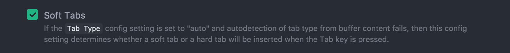
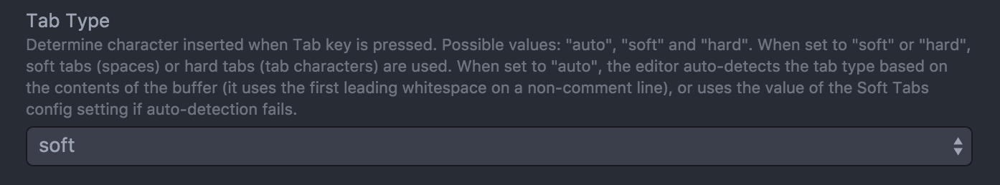

Como Python no utiliza llaves, sino indentación o sangría es importante configurar el editor para usar espacios en vez de tabuladores. En Atom desde la configuración se debe utilizar:
 
Python no se compila. El prgorama python recibe archivos de texto. Si un archivo con permisos de ejecución (ej: chmod 755 main.py) tiene como primer línea #!/usr/bin/env python o #!/usr/bin/python no hace falta hacer python main.py sino simplemente ./main.py.
No hay main. Se puede emular con la estructura:
if __name__ == "__main__":
print("Hola mundo")Las variables no se les da tipo y son automáticas, con solo definirlas es suficiente. Por ejemplo en C:
char cadena[] = "Cadena";
int x = 5;
int *puntero = NULL;Se convierte a:
cadena = "cadena"
x = 5
puntero = None # No tiene sentido en PythonLas cadenas pueden usar las "comillas dobles" como 'las simples'. Si se usan triples se pueden extender por varias líneas.
Las cadenas se pueden componer de manera similar a sprintf:
nombre = 'Pepe'
apellido = 'Grillo'
edad = 15
frase = 'Soy %s %s y tengo %d años' % (nombre, apellido, edad)Los arreglos se definen como arreglo = [] y son de tamaño dinámico.
arreglo.append(1)
arreglo.append("dos")
print(len(arreglo))
print (arreglo[0], arreglo[1])Los mapas, o asociaciones clave-valor, se llaman diccionario en Python:
a = {} # es lo mismo que a = dict()
a['nomnbre'] = 'Pepe Grillo'
a['edad'] = 18
a['resiste_pisadas'] = False
# Pero también podemos usar claves enteras
a[1] = "Arreglo"
a[2] = "Disperso"En vez de utilizar las típicas llaves {} los bloques empiezan con : y se delimitan por indentación.
Supongamos el siguiente código en C:
int a = 1, b;
if (a > 1) {
printf("a es mayor que 1");
b = a;
}se convierte a:
a = 1
b = None
if a > 1:
print("a es mayor que 1")
b = aEl for al igual que en bash, recorre colecciones.
lista = ['lista', 'de', 'cosas']
for elemento in lista:
print("elemento = %s" % elemento)Para realizar un for numérico:
for i in range(10):
print("i = %d" % i)while (1) {
printf("Bucle infinitooooo");
usleep(500000);
}El equivalente sería:
import time # Para el sleep
while True:
print("Bucle infinitooooo")
sleep(0.5)Una función en C como:
int funcion(char *nombre) {
printf("Hola %s", nombre);
return strlen(nombre);
}Se traduciría a:
def funcion(nombre):
print("Hola %s" % nombre)
return len(nombre)C no tiene clases, así que no hay un equivalente directo.
Una clase en Python se define con class:
# Esta clase hereda de object, podría no heredar de nada, en Kivy se
# hereda típicamente de un Widget, Layout o App.
class Empleado(object):
def __init__(self, nombre, apellido):
Persona.__init___()
self.nombre = nombre
self.apellido = apellidoLos atributos nombre y apellido se asinganan en el constructor que debe tener el nombre __init__.